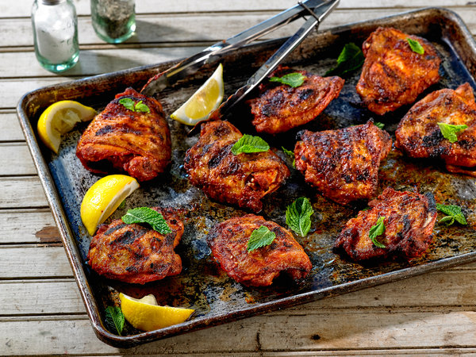

Simple (herb basted) Grilled Chicken

simple grilled chicken
This is another summer staple. Very easy to prepare, wonderfully unpretentious, and very forgiving and delicious cook proccess
Ingredients
- A whole chicken, preferably from a butcher; alternatively, legs, thighs, and breasts
- smoked paprika
- the zest of one lemon
- kosher salt
Basting:
- 1 stick high quality butter; unsalted
- 2-3 garlic cloves; crushed
- fresh herbs; basil, sage, rosemary etc.
Steps:
- Break chicken down into parts; seperate thighs and legs; layout on a sheetpan, or large bowl
- season liberally with salt; then coat generously with smoked paprika; zest 1 lemon overtop
- move pieces into a large ziplock bag, 30 minutes (or overnight) before grilling
- next, prepare your basting butter; melt the butter gently in a small sauce pot.
- as the butter is melting, crush 2-3 cloves of garlic into it;
- let sit until the bubbles have settled; toss herbs in whole, and remove fat from heat
- Set your grill up to have a hot and medium side;
- cook the chicken over high heat, turning frequently, once ever 1-2 minutes. The more the better
- baste the surface of the chicken before flipping; remove pieces when done (roughly
8-10 minutes for thighs and legs, 12-14 minutes for breasts)